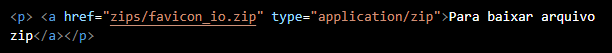

São os links que direcionam o usuário para outro site meu, exemplo:
Nós criamos uma cadeia de sites de receitas, temos o site principal com 200 opções de receitas. O usuário entra no site principal escolhe uma receita e clica sobre, assim ele será re direcionado para outro site (aberto na mesma aba) mas que continua sendo meu.
Acesse meu repositório de Python no GitHub AQUI.
Para acessar minha Segunda página CLICK AQUI. .
Para acessar minha Segunda página CLICK AQUI.
Acesse minha página de testes clicando aqui .
